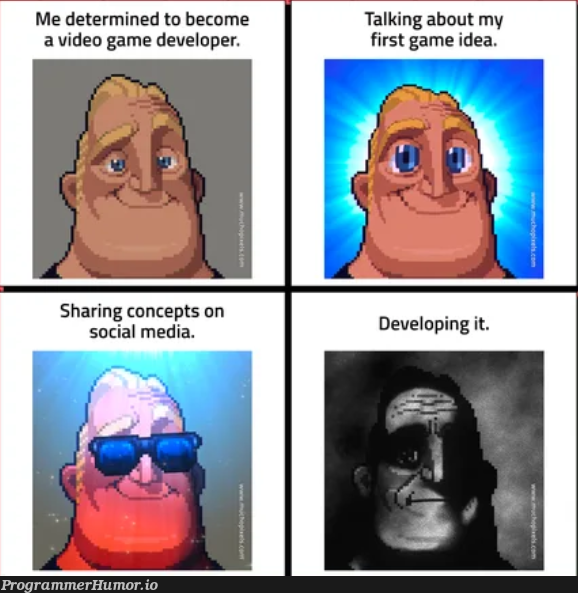
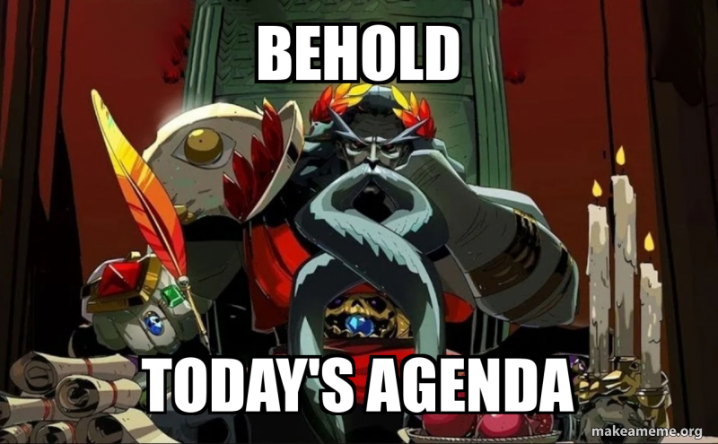
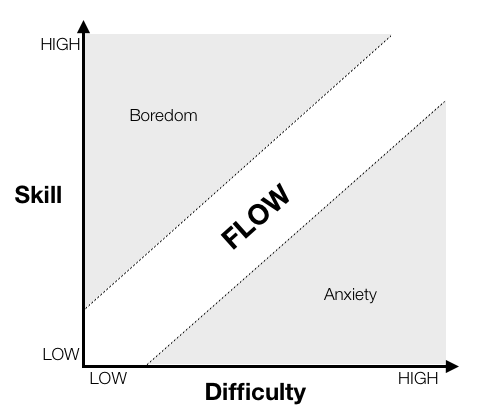

Cours 9 – Jeux vidéo¶

Image : mème de ProgrammerHumor.io, reproduit à des fins pédagogiques (droits réservés à ses auteurs).
Ordre du jour¶

- Retour sur la feuille de suivi
- Activité — Jouer, puis analyser
- Le domaine du jeu vidéo
- Éléments importants en jeux vidéo
- Exercice — Construction d'un exemple : un jeu vidéo
- Pour aller plus loin
- Préparation pour la semaine prochaine
Retour sur la feuille de suivi¶
- Correction des bogues (bouton retour, nom trop long, liker ne donne pas d'XP)
- Ajout de thème (licorne jour/nuit, Doom, thème personnalisé)
Avez-vous un nouveau projet à ajouter?¶
Tournée ajout de feature ou bogues via les issues¶
Activité — Jouer, puis analyser¶
Avant de nommer les concepts, on les observe. Gardez vos réponses : on y revient à la fin des éléments importants.
- Seul(e), 5 minutes : jouer à Pac-Man.
- En équipe de 2, 10 minutes : répondre aux questions suivantes. - Quelle action répétez-vous sans arrêt? Qu'est-ce que le jeu vous renvoie après chaque action (son, image, points)? - Quelles sont les règles? Comment gagne-t-on, comment perd-on, qu'est-ce qui donne un bonus? - Le jeu change-t-il de façon de jouer à certains moments (menu, partie, fin de partie, niveau suivant)? - À quel moment avez-vous eu du plaisir? À quel moment avez-vous été frustrés ou tentés d'abandonner? - Y a-t-il une histoire? Qui est le personnage, que veut-il et qu'est-ce qui l'en empêche? - Comment décririez-vous le style visuel du jeu en trois mots (formes, couleurs, ambiance)?
- En groupe : mise en commun.
Le domaine du jeu vidéo¶
La conception (game design) se concentre sur la façon d'imaginer le jeu, alors que le développement (game dev) se concentre sur la façon de le faire. Les concepteurs imaginent l'expérience; les développeurs la transforment en réalité. La conception fait appel à un sens artistique, le développement à un sens logique, mais les deux restent étroitement liés. Pour revoir les étapes de production d'un jeu vidéo, consultez le cours 7.
Les types d'entreprises¶
Pour revoir les types d'entreprises en général, consultez le cours 6.
| Type | Description | Exemples |
|---|---|---|
| Grands studios (jeux « AAA ») | Équipes de centaines de personnes, gros budgets, production de plusieurs années | Ubisoft Montréal, Eidos-Montréal, WB Games Montréal, Behaviour Interactive |
| Studios indépendants | Petites équipes, jeux plus modestes, grande liberté créative | Kitfox Games |
| Jeux mobiles et occasionnels | Jeux courts, souvent gratuits avec achats intégrés | Ludia |
| Jeux sérieux et éducatifs | Jeux conçus pour former, sensibiliser ou soigner (musées, entreprises, santé) | Selon le mandat |
| Studios de service | Sous-traitance d'une partie de la production (art, son, tests) | Selon le mandat |
Les exemples ne sont pas exhaustifs, et les studios changent vite (fermetures, rachats) : vérifiez leur situation actuelle avant de les citer dans votre travail.
Les métiers¶
Dans les grands studios, chaque facette de la conception et de la production devient un métier.
| Métier | Ce qu'il fait |
|---|---|
| Concepteur de jeu (game designer) | Imagine l'expérience : mécaniques, boucle de jeu et phases de jeu |
| Concepteur de niveaux (level designer) | Conçoit l'espace de jeu et la disposition de l'environnement pour optimiser le gameplay |
| Concepteur de système (system designer) | Construit et équilibre les mécaniques (économie, combat, compétences, statistiques) |
| Créateur de contenu (content creator) | Écrit et conçoit les personnages, l'univers, l'intrigue, les dialogues et les missions |
| Concepteur d'expérience (experience designer) | S'occupe de la rétroaction et du ressenti du joueur (rôle plus rare, dans les très grandes équipes) |
| Programmeur | Programme les mécaniques, les outils et le moteur de jeu |
| Artiste | Dessine et modélise les personnages et les décors, anime, conçoit l'interface |
| Concepteur sonore | Crée les effets sonores, la musique et l'ambiance |
| Assurance qualité (testeur) | Teste le jeu, repère et documente les bogues |
| Producteur | Planifie, gère le budget, l'échéancier et l'équipe |
Entrer dans le domaine¶
Le jeu vidéo est un domaine très recherché : les postes sont compétitifs, surtout pour les débutants. Un DEC en intégration multimédia donne une base large, mais il est rarement suffisant à lui seul. Il faut généralement :
- Se spécialiser dans un métier du jeu (programmation, art, conception, son, assurance qualité) par une formation complémentaire, une AEC ou des études universitaires.
- Bâtir un portfolio de petits jeux et de prototypes, même simples, et pratiquer en équipe, par exemple avec des game jams (marathons de création de jeu de 24 à 72 heures).
- Faire un stage et développer son réseau.
- Maîtriser l'anglais : plusieurs équipes sont bilingues ou anglophones.
Les compétences du domaine (interactivité, narration, 2D et 3D, programmation) se transposent aussi aux jeux sérieux, aux installations interactives, au web et à l'animation.
Éléments importants en jeux vidéo¶
- Le fun — l'expérience devrait donner du plaisir
- Le flow — le défi est équilibré avec les capacités du joueur
- Le style visuel — des choix de forme, de couleur et d'éclairage cohérents qui créent l'ambiance
- Les mécaniques — des règles claires qui forment le jeu
- La boucle et les phases de jeu — une action qui donne envie de recommencer, rythmée par des phases
- L'agentivité — l'utilisateur doit avoir des choix significatifs
- La narration — l'histoire soutient le flow et met le gameplay en valeur
Le fun¶
Selon Koster (2004), le fun est le plaisir éprouvé lors de la résolution mentale d'un défi : le cerveau trouve et découvre des motifs (patterns) dans le chaos. Ce plaisir est subjectif : on dira plutôt qu'un jeu fun est un jeu qui nous divertit, même si les émotions vécues peuvent être négatives (tristesse, conflit, haine, etc.).
Les sources de divertissement sont, entre autres :
- La curiosité
- L'évasion
- Le défi
- L'expression
- L'ingéniosité
- L'identification
Selon Ruswick (2017), un jeu doit donner envie de commencer et envie de terminer. Pour y arriver :
- Il doit être simple à comprendre et difficile à maîtriser.
- Le joueur doit construire un pont entre l'objectif (ce qu'on doit faire) et l'obstruction (ce qui nous empêche de le faire).
- Les défis et la progression doivent donner un sentiment de satisfaction.
- Le jeu doit créer de l'émerveillement en dépassant les attentes (suspense et surprise).
Le fun se découvre plus souvent qu'il ne se construit : cette découverte se fait grâce au prototype et aux tests.
Les types de joueurs¶
Un jeu s'adresse à un public cible. Pour mieux le cerner, on distingue différents types de joueurs (typologie inspirée de Bartle, 1996, adaptée par Nadeau, 2020) et on oriente le concept en conséquence :
| Type | Le plaisir provient de... |
|---|---|
| Fonceur (achiever) | L'accomplissement des objectifs du jeu (défi) |
| Explorateur (explorer) | L'exploration du jeu, le connaître de fond en comble (découverte) |
| Social (socializer) | Le développement de relations (camaraderie) |
| Combattant (fighter, killer chez Bartle) | S'imposer sur les autres : compétition, destruction ou aide et enseignement des autres |
Les catégories et les genres¶
Il est difficile de classer un jeu selon un seul aspect (gameplay, intrigue ou esthétique), car les jeux vidéo sont des processus interactifs. On les regroupe tout de même en grandes familles :
- Une catégorie est une grande famille de jeux (il y en a huit).
- Un genre est un sous-type plus précis à l'intérieur d'une catégorie (plateforme, tir, casse-tête, etc.).
- Plusieurs jeux mélangent les genres.
| Catégorie | Genres (exemples) | Jeu connu | Type de joueur attiré (tendance) |
|---|---|---|---|
| Action | Plateforme, tir, combat, arcade | Pac-Man, Super Mario | Fonceur |
| Aventure | Aventure-action, point-and-click | Zelda | Explorateur |
| Jeu de rôle | Au tour par tour, action-RPG | Pokémon | Explorateur, fonceur |
| Simulation | Gestion, vie, conduite | Les Sims | Explorateur |
| Stratégie | Tour par tour, temps réel | StarCraft, XCOM | Fonceur, combattant |
| Sport | Football, hockey, course | FIFA, Mario Kart | Combattant, social |
| Réflexion | Casse-tête, puzzle | Tetris | Fonceur |
| Contemplatif | Exploration sans pression | Journey | Explorateur |
La dernière colonne n'est qu'une tendance : un même type de joueur peut aimer plusieurs genres.
Le flow¶
Le flow (Csikszentmihalyi, 1990) est l'état psychologique d'une personne totalement immergée dans l'accomplissement d'une tâche : très haut niveau de concentration et perception du temps faussée. Trois ingrédients pour l'atteindre :
- Des objectifs clairs et précis
- Une valorisation constante des efforts (la rétroaction de la boucle de jeu)
- Un équilibre juste entre les capacités du joueur et l'objectif ciblé (ni trop facile, ni trop difficile)

Figure 1 : Flow, boredom, and anxiety as they relate to task difficulty and user skill level. Adapted from Csikszentmihalyi, 1990. Image : Sean Baron, « Cognitive Flow: The Psychology of Great Game Design », Game Developer, 2012. Droits réservés à l'auteur, image utilisée à des fins pédagogiques.
Évitez d'interrompre le flow : par exemple, une longue cinématique au milieu de l'action le brise.
Le style visuel¶
Le style visuel est l'ensemble des choix de forme, de couleur, de texture, d'éclairage et de niveau de détail qui donnent son aspect au jeu. C'est la partie de l'esthétique la plus proche du joueur : elle crée l'ambiance et permet l'immersion. Un jeu vidéo intègre d'ailleurs les grandes formes d'art : arts visuels, architecture et sculpture (modélisation, level design), musique, littérature, arts de la scène et cinéma.
Le style visuel se choisit en fonction de trois contraintes :
- Les ressources de l'équipe : le temps, le budget et les habiletés disponibles.
- La technologie : certaines mécaniques et certains rendus sont impossibles sans la technologie adéquate.
- La lisibilité : le joueur doit repérer rapidement ce qui est interactif et ce qui est important.
| Style | Caractéristiques | Exemple |
|---|---|---|
| Pixel art | Image composée de pixels visibles, palette réduite | Pac-Man, Space Invaders |
| Dessiné à la main | Illustration 2D, texture de dessin | Hollow Knight |
| Silhouette minimaliste | Noir et blanc, formes simples | Limbo |
| Voxel | Monde 3D construit en cubes | Minecraft |
| 3D stylisé | Couleurs vives, formes simplifiées, ombrage « dessin animé » | Zelda : Breath of the Wild |
| Réaliste | Proportions, lumière et textures proches du réel | The Last of Us |
Une direction artistique cohérente se construit avec :
- Une palette de 3 à 5 couleurs liée à l'ambiance (chaude, froide, désaturée) et gardée tout au long du jeu
- Des références visuelles (jeux, films, peintures, photos) rassemblées dans un moodboard
- Le même style pour tous les éléments : personnages, décors et interface
Les mécaniques¶
Les mécaniques sont les règles; le gameplay est l'expérience qui naît de leur combinaison. On en distingue trois niveaux :
- Les mécaniques cœurs (l'essence du jeu)
- Les mécaniques secondaires (la diversité du jeu)
- Les mécaniques exotiques (la diversité occasionnelle)
Le game designer veut éviter les idées géniales sur papier qui se transposent mal en partie réelle (bien en théorie, mais ennuyantes en pratique) : il faut éviter les tâches répétitives, peu surprenantes ou trop faciles.
Exemple — Space Invaders
- Mécaniques cœurs : le joueur déplace le canon à l'horizontale, il peut faire feu, son projectile détruit instantanément un alien, il a trois vies et perd s'il les perd toutes; les aliens se déplacent de gauche à droite, descendent d'une rangée après un cycle, tirent à une cadence régulière et leur projectile enlève une vie au joueur.
- Mécaniques secondaires : système de pointage, système de meilleur score (high score).
La boucle et les phases de jeu¶
La boucle de jeu (gameplay loop)¶
La boucle de jeu (aussi appelée core loop) est le cycle d'actions que le joueur répète : action → rétroaction → récompense → motivation à recommencer. Elle est construite avec les mécaniques cœurs. Si elle n'est pas fun à répéter, aucune quantité de contenu ne sauvera le jeu.
On distingue généralement trois échelles de boucle :
| Boucle | Durée | Question à laquelle elle répond |
|---|---|---|
| De moment en moment (moment-to-moment) | Quelques secondes | Qu'est-ce que je fais maintenant? (sauter, tirer, esquiver) |
| De session (session loop) | Quelques minutes à une heure | Qu'est-ce que je cherche à accomplir pendant cette partie? (finir un niveau, gagner un match) |
| De métajeu (meta loop, metagame) | Plusieurs sessions | Pourquoi je reviens demain? (progression du personnage, collection, déblocages, classement) |
Attention à ne pas confondre avec la game loop des programmeurs : c'est la boucle du moteur de jeu qui, à chaque image, lit les commandes (input), met à jour l'état du jeu (update) et affiche le résultat (render).
Les phases de jeu (gameplay phases)¶
Une phase de jeu est un segment du jeu qui a ses propres règles, ses propres contrôles, sa propre interface et souvent sa propre ambiance visuelle et sonore. Passer d'une phase à l'autre change la façon de jouer, ce qui évite la monotonie et rythme l'expérience (alternance de tension et de repos).
Côté programmation, chaque phase correspond à un état de jeu (game state), et le jeu est géré par une machine à états (state machine) : à tout moment, le jeu se trouve dans un seul état, et des transitions déclenchées par une condition le font passer à un autre. Dans un schéma logique, chaque phase est un bloc et chaque transition est une flèche.
Exemple — Pokémon (série principale)
| Phase | Ce que fait le joueur | Contrôles et interface | Transition vers... |
|---|---|---|---|
| Exploration (overworld) | Se déplace dans le monde, parle aux personnages, cherche des objets, soigne son équipe au Centre Pokémon | Déplacement en temps réel, carte vue de dessus | Combat : rencontre dans l'herbe haute ou dresseur qui nous repère |
| Combat (battle) | Choisit une action à tour de rôle (attaquer, sac, changer de Pokémon, fuir) | Menu au tour par tour, écran différent | Exploration : victoire, fuite ou capture |
| Menus (menu) | Gère l'équipe, le sac, le Pokédex | Navigation dans des menus | Exploration : fermeture du menu |
- Boucle de moment en moment : choisir une attaque, voir l'effet, recevoir la rétroaction (animation, son, barre de vie).
- Boucle de session : explorer une route, combattre, soigner son équipe, atteindre la ville suivante et vaincre le champion d'arène.
- Boucle de métajeu : capturer, entraîner et faire évoluer ses Pokémon, obtenir des badges.
- Transition mise en scène : l'animation d'entrée en combat et le changement de musique signalent clairement au joueur qu'il change de phase.
Exemple — Fortnite (bataille royale)
- Lobby : personnalisation du personnage, choix du mode, formation d'une équipe
- Appariement (matchmaking) : attente de la partie
- Largage : choix de l'endroit où atterrir
- Collecte (looting) : ramasser armes et ressources
- Combat et rétrécissement de la zone : la tension monte jusqu'au dernier joueur en vie
- Résultats : classement, expérience et récompenses, puis retour au lobby
La phase de combat est la boucle de session; le lobby et les récompenses forment la boucle de métajeu qui donne envie de relancer une partie.
Autre exemple — XCOM : une phase de gestion de la base (recherche, construction, choix de la mission) alterne avec une phase de combat tactique au tour par tour. La première est le métajeu, la seconde le core gameplay.
Quelques trucs pour concevoir ses phases
- Nommer chaque phase et lister ses règles, ses contrôles et son interface.
- Définir la condition de transition entre les phases (victoire, défaite, temps écoulé, action du joueur).
- Annoncer les transitions avec une rétroaction claire (animation, musique, écran de chargement) pour ne pas désorienter le joueur.
- Varier le rythme : alterner phases d'action et phases de repos pour préserver le flow.
L'agentivité¶
L'agentivité est le pouvoir d'influence du joueur sur le jeu. Jesper Juul (2002) distingue deux structures de jeu :
| Jeu progressif | Jeu émergent | |
|---|---|---|
| Définition | « Un jeu dans lequel le joueur fait face à des défis en série et où les options ainsi que les solutions sont définies par le développeur. » | « Un jeu déterminé par un ensemble de règles qui se combinent pour offrir de nombreuses variations, où le gameplay émerge de l'agentivité du joueur. » |
| Structure | Linéaire, solutions prédéterminées | Non linéaire, le joueur invente ses stratégies |
| Fin | Conclusions clairement définies, moins de rejouabilité | Fins ouvertes (open ending), beaucoup de rejouabilité |
| Exemples | Halo, Uncharted, The Last of Us, Super Mario, Hollow Knight | Échecs, StarCraft, Zelda, GTA, Minecraft |
Il est difficile de classer un jeu de façon absolue : la narration peut être très progressive alors que le gameplay est émergent, et inversement. On place plutôt un jeu sur un spectre.
La narration¶
Un jeu raconte aussi une histoire, même simple : Pac-Man a un personnage, un objectif et des obstacles. En jeu vidéo, la narration est là pour soutenir le flow (elle donne un but au joueur et une raison de continuer) et mettre le gameplay en valeur, pas pour le remplacer : on ne l'écrit pas comme un scénario de film. Pour revoir l'intrigue, les personnages et l'univers, consultez le cours 7.
Retour sur l'activité¶
Reprenez vos réponses sur Pac-Man et nommez ce que vous aviez observé :
- L'action répétée et ce qu'elle rapporte : la boucle de jeu
- Les règles et les conditions de victoire et de défaite : les mécaniques cœurs et secondaires
- Les changements de façon de jouer : les phases de jeu et leurs transitions
- Les moments de plaisir et de frustration : la source du fun et l'équilibre du flow
- Le type de joueur à qui le jeu s'adresse : les types de joueurs
- La famille à laquelle il appartient : sa catégorie et son genre
- Les trois mots du style visuel : le style visuel (et la palette de couleurs)
- Les choix du joueur : plutôt progressif ou émergent?
- Le personnage, ce qu'il veut et ce qui l'en empêche : la narration
Exercice — Construction d'un exemple : un jeu vidéo¶
Contraintes :
- Jeu 2D, solo
- Jeunes adultes de 18 à 25 ans à la recherche de sensations
- Une partie dure de 5 à 10 minutes et la rejouabilité doit rester intéressante (expliquez pourquoi)
- Une seule mécanique cœur et une seule mécanique secondaire
- Au moins deux phases de jeu
- Jouable au clavier ou à la souris
En équipe de 2-3, construisez le projet en suivant les étapes ci-dessous. Notez vos réponses au fur et à mesure : elles serviront à rédiger la page GitHub Pages de l'étape 5. Chaque membre publie ensuite la page sur son propre compte GitHub.
Étape 1 — Idéation : le public cible¶
- Type de joueur visé : fonceur ou explorateur (le jeu est solo).
- Catégorie et genre : choisissez dans le tableau des catégories et des genres.
- Le concept en une phrase (logline, voir le cours 7) : un personnage, un objectif, un obstacle. Transformez radicalement un jeu existant que vous connaissez (exemple : un jeu de gestion de parc d'attractions devient un jeu de combat où il faut le détruire).
Étape 2 — Préproduction : les mécaniques et le fun¶
Définissez :
- Le nom du jeu (unique et pertinent)
- L'objectif du jeu et les conditions de victoire et de défaite
- La mécanique cœur et la mécanique secondaire
- La boucle de jeu : action → rétroaction → récompense
- Les phases de jeu (exemple : exploration → combat → résultats) et la condition de transition entre elles
- La source du fun pour le type de joueur visé : expliquer la source de plaisir sans dire fun (utiliser les sources de divertissement)
- Le flow : comment le jeu équilibre-t-il le défi et les capacités du joueur?
- Le type de structure : progressif ou émergent? (expliquez en quelques mots)
- La rétroaction : que se passe-t-il (son, lumière, animation) quand le joueur réussit ou échoue?
Étape 3 — Histoire, esthétique et interface¶
- Histoire (pour revoir ces notions, consultez le cours 7) : - le personnage principal : sa description, son désir (ce qu'il veut), son besoin (ce qu'il lui faut) et ses habiletés spéciales qui influencent le gameplay; - l'intrigue en 4 temps : le début, le milieu, le revirement et la fin, en une phrase chacun. Associez chaque temps à une phase de jeu ou à une transition; - l'univers : où et quand se passe le jeu, et un élément de folklore mis en scène par le style visuel plutôt qu'expliqué; - le lien avec le gameplay : comment la mécanique cœur exprime le désir du personnage?
- Esthétique :
- un style visuel choisi dans le tableau, justifié par les ressources de l'équipe et la lisibilité du jeu;
- une palette de 3 à 5 couleurs (codes hexadécimaux, ex.
#1E90FF); - 3 liens vers des images de référence qui illustrent votre style; - l'ambiance sonore. - Interface : la liste des objets jouables et un croquis de l'écran principal (HUD, menu).
Étape 4 — Trouver des ressources libres de droits¶
Trouvez une image (personnage, décor ou élément d'interface) et un son ou une musique d'ambiance. Pour chacun :
- Identifiez sa licence.
- Rédigez la mention d'attribution (voir l'étape 4 du cours 8).
Sites pour les ressources de jeu :
- Images, sprites et interfaces : OpenGameArt, itch.io (ressources gratuites), Game Art 2D, CraftPix
- Sons : Freesound
- Musique : Bensound, Incompetech, Free Music Archive
Ces sites regroupent des ressources aux licences variées (CC0, CC BY, etc.) : vérifiez la licence de chaque fichier.
Étape 5 — Créer le dépôt et rédiger la page¶
- Créer un nouveau dépôt public nommé
concept-jeu, avec un fichierREADME.md. - Téléverser le croquis de l'interface et l'image dans le dépôt, sous les noms exacts
interface.jpgetressource.jpg: Add file → Upload files. - Copier le modèle ci-dessous dans le
README.md, puis remplacer chaque....
# Titre du jeu
Projet conçu en équipe avec : [prénoms des coéquipiers]
## Le public cible
- Type de joueur visé (fonceur ou explorateur) : ...
- Catégorie et genre : ...
- Le concept en une phrase (un personnage, un objectif, un obstacle) : ...
## Les mécaniques
- Objectif du jeu : ...
- Condition de victoire : ...
- Condition de défaite : ...
- Mécanique cœur : ...
- Mécanique secondaire : ...
- Structure (progressif ou émergent, expliquez en quelques mots) : ...
- Prototype Scratch (facultatif) : [lien du projet](lien)
## Les phases de jeu
- La boucle de jeu (action → rétroaction → récompense) : ...
- Phase 1 : ... (règles, contrôles, interface)
- Transition vers la phase 2 : ...
- Phase 2 : ... (règles, contrôles, interface)
- Transition vers la phase suivante ou la fin : ...
## Le fun et le flow
- La source du fun pour le type de joueur visé (sans utiliser le mot *fun*) : ...
- Le flow (équilibre défi / capacités) : ...
- La rétroaction (son, lumière, animation) : ...
- La rejouabilité (pourquoi recommencer) : ...
## L'histoire
- Le personnage principal (description, désir, besoin, habiletés spéciales) : ...
- Le début (phase de jeu ou transition associée) : ...
- Le milieu (phase de jeu ou transition associée) : ...
- Le revirement (phase de jeu ou transition associée) : ...
- La fin (phase de jeu ou transition associée) : ...
- L'univers (où, quand, un élément de folklore) : ...
- Comment la mécanique cœur exprime le désir du personnage : ...
## L'esthétique et l'interface
- Le style visuel (et pourquoi il convient à votre jeu) : ...
- La palette de couleurs : ...
- Trois images de référence : [image 1](lien), [image 2](lien), [image 3](lien)
- L'ambiance sonore : ...
- Les objets jouables : ...
- Croquis de l'interface :

## Les ressources

- Son d'ambiance : [titre du son](lien)
- Crédits :
- « Titre de l'image », par ..., [Source](lien), [Licence](lien)
- « Titre du son », par ..., [Source](lien), [Licence](lien)
Pour ajouter les images à la page, voir la procédure du cours 8.
Étape 6 — Publier sur GitHub Pages¶
- Aller dans Settings → Pages.
- Sous Branch, choisir main puis / (root), et cliquer sur Save.
- Rafraîchir la page après une minute : GitHub affiche l'adresse du site publié.
Voir aussi Publier sur GitHub Pages au cours 4.
Facultatif — Prototyper la boucle dans Scratch¶
Reproduisez la mécanique cœur et sa rétroaction dans un projet Scratch, puis ajoutez le lien du projet dans la section « Les mécaniques » de votre page. Faites-le tester par une autre équipe en notant ses observations sur le flow et le fun.
Remise sur Teams : le lien de votre page GitHub Pages.
Pour aller plus loin¶
Notions complémentaires, utiles pour affiner votre concept ou votre prochain projet.
- La tétrade : quatre éléments travaillent conjointement pour créer une expérience immersive, et chaque choix dans un élément dépend des trois autres. L'esthétique est l'ambiance visuelle et sonore, les mécaniques sont les règles et l'objectif, l'histoire est la séquence d'événements (linéaire ou émergente) et la technologie est ce qui permet au joueur d'interagir (cela pourrait être du papier et un crayon).
- L'interface (UI et UX) : l'interface utilisateur comprend le HUD (heads-up display : vie, énergie, munitions) ainsi que les menus et la gestion (inventaire). L'expérience utilisateur en conçoit l'architecture : une maquette illustre le flow de l'interface, puis le concepteur UI la concrétise. Le motion graphics anime la rétroaction : une bonne animation est responsive, dirigée, cohérente et intuitive.
- Le storytelling : trois piliers sont mobilisés (Extra Credits, 2018) : l'intrigue, les personnages et le folklore (lore). En jeu vidéo, la narration est toujours au service du gameplay : on la justifie par l'esthétique et la mécanique.
- La conception de niveaux : un bon niveau est fun à explorer, montre l'intrigue plutôt que de la raconter, montre quoi faire sans dire comment (objectif clair, moyen flou), apprend de nouvelles choses au joueur, fait progresser la tension dramatique et surprend. Le croquis à vol d'oiseau est un guide qui évolue avec les tests.
Merci et à la semaine prochaine!¶
Commentaires ou questions?